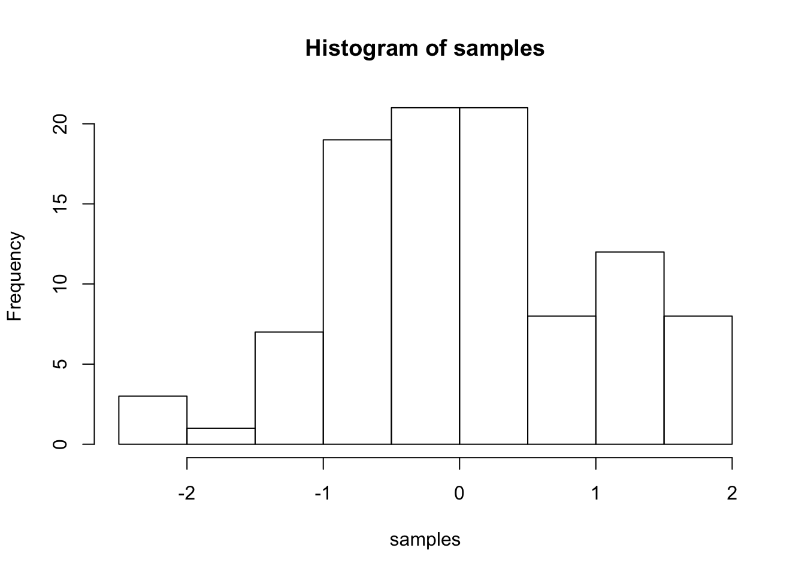

Journal (reproducible report)
Ozge Beyza Albayrak
04 December 2020
IMPORTANT: You can delete everything in here and start fresh. You might want to start by not deleting anything above this line until you know what that stuff is doing.
This is an .Rmd file. It is plain text with special features. Any time you write just like this, it will be compiled to normal text in the website. If you put a # in front of your text, it will create a top level-header.
1 Challenge 1
1.1 Sales Analysis by State
# Load libraries ----
library(tidyverse)
library(readxl)
# Importing Files ----
bikeshops_tbl <- read_excel("data-science/00_data/01_bike_sales/01_raw_data/bikeshops.xlsx")
bikes_tbl <- read_excel(path = "data-science/00_data/01_bike_sales/01_raw_data/bikes.xlsx")
orderlines_tbl <- read_excel("data-science/00_data/01_bike_sales/01_raw_data/orderlines.xlsx")
# Examining Data ----
bikeshops_tbl## # A tibble: 30 x 5
## bikeshop.id name location lat lng
## <dbl> <chr> <chr> <dbl> <dbl>
## 1 1 Zum Goldenen Lenker Berlin, Berlin 52.5 13.4
## 2 2 AlexandeRad Hamburg, Hamburg 53.6 10.0
## 3 3 Fahrradladen 16 Munich, Bavaria 48.2 11.6
## 4 4 Bikestation Köln Cologne, North Rhine-Westphalia 50.9 6.95
## 5 5 Montimare Frankfurt, Hesse 50.1 8.68
## 6 6 fahrschneller Stuttgart, Baden-Württemberg 48.8 9.18
## 7 7 Rad Ab Düsseldorf, North Rhine-Westph… 51.2 6.79
## 8 8 Lucky Bike Dortmund, North Rhine-Westphal… 51.5 7.47
## 9 9 Zweirad-Center Stadl… Essen, North Rhine-Westphalia 51.5 7.01
## 10 10 WITT-RAD Bremen, Bremen 53.1 8.83
## # … with 20 more rowsglimpse(bikeshops_tbl)## Rows: 30
## Columns: 5
## $ bikeshop.id <dbl> 1, 2, 3, 4, 5, 6, 7, 8, 9, 10, 11, 12, 13, 14, 15, 16, 17…
## $ name <chr> "Zum Goldenen Lenker", "AlexandeRad", "Fahrradladen 16", …
## $ location <chr> "Berlin, Berlin", "Hamburg, Hamburg", "Munich, Bavaria", …
## $ lat <dbl> 52.51667, 53.57532, 48.15000, 50.93333, 50.11552, 48.7823…
## $ lng <dbl> 13.400000, 10.015340, 11.583333, 6.950000, 8.684167, 9.18…# Joining Data ----
bike_orderlines_joined_tbl <- orderlines_tbl %>%
left_join(bikes_tbl, by = c("product.id" = "bike.id")) %>%
left_join(bikeshops_tbl, by = c("customer.id" = "bikeshop.id"))
bike_orderlines_joined_tbl## # A tibble: 15,644 x 19
## ...1 order.id order.line order.date customer.id product.id quantity
## <chr> <dbl> <dbl> <dttm> <dbl> <dbl> <dbl>
## 1 1 1 1 2015-01-07 00:00:00 2 2681 1
## 2 2 1 2 2015-01-07 00:00:00 2 2411 1
## 3 3 2 1 2015-01-10 00:00:00 10 2629 1
## 4 4 2 2 2015-01-10 00:00:00 10 2137 1
## 5 5 3 1 2015-01-10 00:00:00 6 2367 1
## 6 6 3 2 2015-01-10 00:00:00 6 1973 1
## 7 7 3 3 2015-01-10 00:00:00 6 2422 1
## 8 8 3 4 2015-01-10 00:00:00 6 2655 1
## 9 9 3 5 2015-01-10 00:00:00 6 2247 1
## 10 10 4 1 2015-01-11 00:00:00 22 2408 1
## # … with 15,634 more rows, and 12 more variables: model <chr>,
## # model.year <dbl>, frame.material <chr>, weight <dbl>, price <dbl>,
## # category <chr>, gender <chr>, url <chr>, name <chr>, location <chr>,
## # lat <dbl>, lng <dbl># Wrangling Data ----
bike_orderlines_wrangled_tbl <- bike_orderlines_joined_tbl %>%
separate(col = location, into = c("city", "state"), sep = ",") %>%
mutate(revenue = price * quantity) %>%
select(-...1, -(gender:url)) %>%
select(-ends_with(".id")) %>%
bind_cols(bike_orderlines_joined_tbl %>% select(order.id)) %>%
select(order.id, contains("order"), contains("model"), contains("city"), contains("state"),
price, quantity, revenue, everything()) %>%
rename(bikeshop = name) %>%
set_names(names(.) %>% str_replace_all("\\.", "_"))
bike_orderlines_wrangled_tbl## # A tibble: 15,644 x 16
## order_id order_line order_date model model_year city state price
## <dbl> <dbl> <dttm> <chr> <dbl> <chr> <chr> <dbl>
## 1 1 1 2015-01-07 00:00:00 Spec… 2021 Hamb… " Ha… 3119
## 2 1 2 2015-01-07 00:00:00 Ulti… 2020 Hamb… " Ha… 5359
## 3 2 1 2015-01-10 00:00:00 Neur… 2021 Brem… " Br… 2729
## 4 2 2 2015-01-10 00:00:00 Spee… 2019 Brem… " Br… 1749
## 5 3 1 2015-01-10 00:00:00 Stit… 2020 Stut… " Ba… 1219
## 6 3 2 2015-01-10 00:00:00 Road… 2020 Stut… " Ba… 1359
## 7 3 3 2015-01-10 00:00:00 Spee… 2020 Stut… " Ba… 2529
## 8 3 4 2015-01-10 00:00:00 Infl… 2021 Stut… " Ba… 1559
## 9 3 5 2015-01-10 00:00:00 Torq… 2020 Stut… " Ba… 3899
## 10 4 1 2015-01-11 00:00:00 Ulti… 2020 Augs… " Ba… 6629
## # … with 15,634 more rows, and 8 more variables: quantity <dbl>, revenue <dbl>,
## # frame_material <chr>, weight <dbl>, category <chr>, bikeshop <chr>,
## # lat <dbl>, lng <dbl># Sales by State ----
# Manipulate
sales_by_location_tbl <- bike_orderlines_wrangled_tbl %>%
select(state, revenue) %>%
group_by(state) %>%
summarise(sales = sum(revenue)) %>%
arrange(desc(sales)) %>%
mutate(sales_text = scales::dollar(sales, big.mark = ".",
decimal.mark = ",'",
prefix = "",
suffix = " €"))
sales_by_location_tbl## # A tibble: 12 x 3
## state sales sales_text
## <chr> <dbl> <chr>
## 1 " North Rhine-Westphalia" 21200613 21.200.613 €
## 2 " Bremen" 10653499 10.653.499 €
## 3 " Bavaria" 6742819 6.742.819 €
## 4 " Baden-Württemberg" 6521090 6.521.090 €
## 5 " Lower Saxony" 4107115 4.107.115 €
## 6 " Hamburg" 3874756 3.874.756 €
## 7 " Schleswig-Holstein" 3224749 3.224.749 €
## 8 " Saxony" 2230245 2.230.245 €
## 9 " Hesse" 1558901 1.558.901 €
## 10 " Berlin" 1128433 1.128.433 €
## 11 " Mecklenburg-Western Pomerania" 618974 618.974 €
## 12 " Saxony-Anhalt" 569614 569.614 €# Visualize
sales_by_location_tbl %>%
ggplot(aes(x = state, y = sales)) +
geom_col(fill = "#00abff") +
geom_label(aes(label = sales_text)) +
theme(axis.text.x = element_text(angle = 45, hjust = 1)) +
scale_y_continuous(labels = scales::dollar_format(big.mark = ".",
decimal.mark = ",",
prefix = "",
suffix = " €")) +
labs(
title = "Revenue by state",
x = "", # Override defaults for x and y
y = "Revenue"
)
theme(axis.text.x = element_text(angle = 45, hjust = 1)) ## List of 1
## $ axis.text.x:List of 11
## ..$ family : NULL
## ..$ face : NULL
## ..$ colour : NULL
## ..$ size : NULL
## ..$ hjust : num 1
## ..$ vjust : NULL
## ..$ angle : num 45
## ..$ lineheight : NULL
## ..$ margin : NULL
## ..$ debug : NULL
## ..$ inherit.blank: logi FALSE
## ..- attr(*, "class")= chr [1:2] "element_text" "element"
## - attr(*, "class")= chr [1:2] "theme" "gg"
## - attr(*, "complete")= logi FALSE
## - attr(*, "validate")= logi TRUE## Sales Analysis between 2015-2019 by State
# Manipulate
library(lubridate)
sales_by_location_year_tbl <- bike_orderlines_wrangled_tbl %>%
select(state, order_date, revenue) %>%
mutate(year = year(order_date)) %>%
group_by(state, year) %>%
summarise(sales = sum(revenue)) %>%
ungroup() %>%
mutate(sales_text = scales::dollar(sales, big.mark = ".",
decimal.mark = ",'",
prefix = "",
suffix = " €"))
sales_by_location_year_tbl## # A tibble: 60 x 4
## state year sales sales_text
## <chr> <dbl> <dbl> <chr>
## 1 " Baden-Württemberg" 2015 1031924 1.031.924 €
## 2 " Baden-Württemberg" 2016 1561658 1.561.658 €
## 3 " Baden-Württemberg" 2017 1224152 1.224.152 €
## 4 " Baden-Württemberg" 2018 1114327 1.114.327 €
## 5 " Baden-Württemberg" 2019 1589029 1.589.029 €
## 6 " Bavaria" 2015 1301461 1.301.461 €
## 7 " Bavaria" 2016 1129852 1.129.852 €
## 8 " Bavaria" 2017 1411851 1.411.851 €
## 9 " Bavaria" 2018 1168783 1.168.783 €
## 10 " Bavaria" 2019 1730872 1.730.872 €
## # … with 50 more rows# Visualize
sales_by_location_year_tbl %>%
ggplot(aes(x = year, y = sales, fill = state)) +
geom_col() +
geom_smooth(method = "lm", se = FALSE) + # Adding a trendline
facet_wrap(~ state) +
scale_y_continuous(labels = scales::dollar_format(big.mark = ".",
decimal.mark = ",",
prefix = "",
suffix = " €")) +
labs(
title = "Revenue by year and state",
subtitle = "North Rhine-Westphalia state has the highest revenue.",
x = "",
fill = "States"
)
Last compiled: 2020-12-04
Notice that whatever you define as a top level header, automatically gets put into the table of contents bar on the left.
1.2 Second level header
You can add more headers by adding more hashtags. These won’t be put into the table of contents
1.2.1 third level header
Here’s an even lower level header
2 My second post (note the order)
Last compiled: 2020-12-04
I’m writing this tutorial going from the top down. And, this is how it will be printed. So, notice the second post is second in the list. If you want your most recent post to be at the top, then make a new post starting at the top. If you want the oldest first, do, then keep adding to the bottom
3 Adding R stuff
So far this is just a blog where you can write in plain text and serve your writing to a webpage. One of the main purposes of this lab journal is to record your progress learning R. The reason I am asking you to use this process is because you can both make a website, and a lab journal, and learn R all in R-studio. This makes everything really convenient and in the same place.
So, let’s say you are learning how to make a histogram in R. For example, maybe you want to sample 100 numbers from a normal distribution with mean = 0, and standard deviation = 1, and then you want to plot a histogram. You can do this right here by using an r code block, like this:
samples <- rnorm(100, mean=0, sd=1)
hist(samples)
When you knit this R Markdown document, you will see that the histogram is printed to the page, along with the R code. This document can be set up to hide the R code in the webpage, just delete the comment (hashtag) from the cold folding option in the yaml header up top. For purposes of letting yourself see the code, and me see the code, best to keep it the way that it is. You’ll learn that all of these things and more can be customized in each R code block.